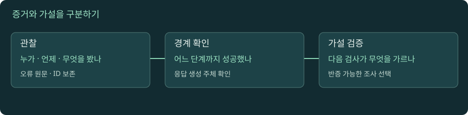

장애 분석 종합: 증상에서 다음 관찰을 고른다
DNS 오류, 연결 실패, 인증서 실패, CORS, 502·504를 실제 관측 단계로 분류합니다. 하나의 요청 ID를 끝까지 추적하고 확인 사실·가설·미확인을 분리한 조사 결과를 작성합니다.

증거로 좁히는 장애 조사
자바스크립트를 켜면 실험을 조작할 수 있습니다. 아래 본문·도식·실습은 그대로 읽을 수 있습니다.
01. 1. 첫 질문은 원인이 아니라 실패의 정확한 모양이다
“API가 안 된다”를 조사 가능한 문장으로 바꾸어 봅니다. 누가, 어떤 환경에서, 어느 시각에, 어떤 URL과 메서드로 요청했으며, 무엇을 기대했고 실제로 무엇을 보았는가? 브라우저 콘솔 오류, HTTP 상태, curl 종료 코드, 앱 예외는 서로 다른 증거입니다. 화면에 504가 보였는지, 아무 응답 없이 브라우저가 타임아웃했는지도 구분해야 합니다. 같은 사용자도 사내망과 모바일망에서 경로가 다를 수 있습니다.
처음부터 해결책을 적용하면 원래 증거가 사라지거나 다른 현상이 섞일 수 있습니다. 우선 재현 시각과 요청 식별자, 전체 URL의 민감하지 않은 부분, 응답 헤더, 오류 문자열을 기록합니다. 토큰과 쿠키는 공유 자료에서 지웁니다. 그다음 정상 사례와 비교할 축을 하나 고릅니다. 특정 지역만 실패, 특정 메서드만 실패, 큰 본문만 실패, 재사용 연결만 실패 같은 차이는 다음 확인을 좁힙니다. 재현되지 않은 상황을 재현했다고 보고하지 않고, 교육용 사례의 로그를 실제 서비스 로그처럼 제시하지 않습니다.
02. 2. 계층별 성공 증거를 쌓고 추측은 뒤에 둔다
일반적인 HTTPS 요청을 이름 조회 → 연결 → TLS → HTTP → 프록시 라우팅 → 앱 → 외부 의존성으로 나눕니다. 이 순서는 사고의 틀이며 실제 구현에서는 재사용·캐시·프록시 때문에 일부 단계가 생략되거나 다른 위치에서 수행될 수 있습니다. 예를 들어 HTTP 401을 받았다면 어떤 HTTP 응답자가 존재했다는 증거입니다. 원본 앱이 실행되었다는 증거는 아닙니다. CDN이나 게이트웨이가 응답했을 수 있습니다.
같은 원칙으로 앱 로그가 없다는 사실도 로그 유실, 잘못된 조회 범위, 다른 서버 라우팅, 앱 앞 거절 중 무엇인지 분리해야 합니다. “없음”이 증거가 되려면 그 요청을 기록해야 하는 시스템과 조회 범위가 정확해야 합니다. 로그의 timezone과 시각 차이를 맞추고 요청 ID를 연결하세요. 패킷, 프록시 로그, 앱 trace가 각각 어느 경계를 관찰하는지도 표시합니다. 상태 코드의 생성 주체를 찾지 않은 채 서버 이름만으로 책임을 지정하면 조사 범위가 잘못 좁아집니다.
03. 3. DNS 오류를 NXDOMAIN·SERVFAIL·연결 문제로 구분한다
NXDOMAIN은 질의한 이름이 없다는 응답이고, NODATA는 이름은 있지만 요청한 유형의 데이터가 없는 경우를 가리킵니다. SERVFAIL은 해석을 끝내지 못했다는 오류로 DNSSEC 검증, 권한 서버 문제 등 여러 가능성이 있습니다. DNS 응답 자체를 못 받은 timeout과도 다릅니다. 한 재귀 리졸버의 응답을 전 세계의 동일 상태로 일반화하면 안 됩니다. 음성 캐시 때문에 레코드를 추가한 뒤에도 일부 클라이언트에서 이전 실패가 이어질 수 있습니다.
조사에서는 클라이언트가 실제 사용하는 리졸버와 검색 도메인, VPN, split DNS, 브라우저 DoH를 확인합니다. dig example.com A가 성공해도 브라우저가 같은 경로를 사용했다고 보장하지 않습니다. IP를 강제로 지정하는 도구 실험으로 이름 조회를 우회할 수는 있지만, SNI와 Host를 보존하지 않으면 다른 서비스를 시험할 수 있습니다. 또한 이미 열려 있는 연결에서는 새 DNS 조회 없이 통신할 수 있습니다. 이 구분은 02·03장의 개념을 장애 분석에 다시 적용하는 부분입니다.
04. 4. 연결 거부·타임아웃·reset에서 알 수 있는 범위
즉시 connection refused가 나면 해당 경로의 어떤 주체가 연결 거절을 알렸다는 힌트입니다. 대상 프로세스가 해당 포트에서 듣지 않거나, 명시적 거절 정책이 있는지 확인할 수 있습니다. 긴 connect timeout은 응답을 받지 못했다는 사실을 보여 주지만 방화벽 차단만을 뜻하지 않습니다. 잘못된 주소, 경로 문제, 응답 손실, 대상 과부하도 후보입니다. reset은 연결이 강제로 종료되었다는 현상이며 종료한 주체와 원인을 별도로 찾아야 합니다.
명령을 실행한 위치도 중요합니다. 앱 컨테이너 안에서는 실패하지만 개발자 노트북에서는 성공할 수 있고, 그 반대도 가능합니다. 같은 URL이 여러 IP를 반환하면 실제 시도한 주소를 확인합니다. IPv4와 IPv6가 다르게 동작할 수도 있습니다. Happy Eyeballs 같은 클라이언트 전략은 여러 후보를 경쟁적으로 시도해 사용자 지연을 줄이므로 단일 주소를 찍은 curl 결과와 브라우저 체감이 다를 수 있습니다. RFC 8305를 참고하되, 특정 구현의 순서와 대기 시간을 직접 확인합니다.
05. 5. TLS 실패와 CORS 실패는 다른 위치에서 생긴다
인증서 이름·만료·신뢰 체인 오류는 일반적으로 HTTPS 연결 설정 중에 나타납니다. 이 단계에서 실패하면 HTTP 상태 코드 자체가 없을 수 있습니다. 반대로 CORS는 브라우저가 교차 출처 요청과 응답 노출을 관리하는 규칙입니다. 단순 요청은 서버에 도달하고 부작용까지 생긴 뒤 브라우저 JavaScript가 응답을 읽지 못할 수 있습니다. preflight가 거절되면 그 후 실제 요청은 보내지 않을 수 있습니다. 두 경우를 Network에서 OPTIONS와 실제 요청의 존재로 구분합니다.
“curl은 성공하니 CORS 문제”라는 문장도 아직 가설입니다. curl은 브라우저 CORS를 적용하지 않지만 경로, 헤더, 쿠키, 인증, 프록시가 달랐을 수도 있습니다. 브라우저의 Origin과 메서드·헤더, 서버의 Access-Control-Allow-* 응답을 비교해야 합니다. 서버가 응답한 500이나 프록시의 오류 페이지에 CORS 헤더가 없어서 콘솔에 CORS가 보이는 경우, 원래 장애와 응답 노출 실패를 함께 분석합니다. CORS 허용을 넓혀 앱의 실제 오류를 고쳤다고 착각하지 마세요. WHATWG Fetch · CORS
06. 6. 502와 504는 응답자의 관점에서 해석한다
502 Bad Gateway는 게이트웨이·프록시 역할의 서버가 업스트림에서 유효하지 않은 응답을 받았다는 의미이고, 504 Gateway Timeout은 필요한 업스트림 응답을 제때 받지 못했다는 의미입니다. 어떤 구체적인 네트워크 예외를 이 코드로 매핑하는지는 제품과 설정에 따라 달라질 수 있습니다. 둘 다 코드 하나만으로 DB 장애, 앱 크래시, 방화벽 중 어느 것이 원인인지 확정하지 않습니다. RFC 9110 §15.6.3–5
브라우저 → CDN → 게이트웨이 → 앱 → 외부 API라면 504를 만든 주체가 CDN인지 게이트웨이인지 앱인지 먼저 찾습니다. 응답 헤더와 본문 스타일은 단서일 뿐 최종 증거는 해당 요청의 로그입니다. 게이트웨이 error log의 connect 단계 timeout과 read 단계 timeout은 다음 확인이 다릅니다. 앱 trace에서 외부 API를 기다렸다면 앱 자체 처리와 외부 대기를 나누고, 클라이언트가 먼저 포기한 뒤 앱이 계속 실행했는지도 확인합니다. timeout 값을 늘리는 조치는 원인 규명과 별개이며 부하와 사용자 대기 시간을 바꿉니다.
07. 7. 종합 사례: 응답 지연을 하나의 타임라인으로 맞춘다
다음은 교육용 가상 로그입니다. 사용자가 10:00:00.000에 요청합니다. 게이트웨이는 10:00:00.050에 수신하고 앱은 10:00:00.070에 시작합니다. 앱은 외부 API를 호출해 1.8초 기다립니다. 게이트웨이의 읽기 대기 정책에 따라 10:00:01.050에 504를 만들고, 앱은 10:00:01.900에 정상 결과를 준비합니다. 이때 “앱의 최종 로그가 성공이니 사용자는 성공”이라고 볼 수 없습니다. 사용자는 이미 오류를 받았고 앱은 그 이후에 완료했습니다.
이 자료가 직접 증명하는 것은 요청 ID가 연결된다는 전제에서 사용자 응답과 앱 완료의 시점이 다르다는 사실입니다. 외부 API가 왜 느렸는지는 아직 모릅니다. 완화 방안도 전체 deadline, 원격 호출 제한, 취소 전달, 재시도 및 중복 방지 계약에 따라 달라집니다. 결제처럼 부작용이 있다면 실패 화면을 본 사용자가 다시 클릭하기 전에 서버가 실제 처리 결과를 조회할 수 있어야 합니다. 이 예시의 시간은 종이에 바꾸어 계산할 수 있습니다. 화면의 사건 카드는 별도의 고정 로그 사례이며 시간을 조작하는 시뮬레이터는 아닙니다. 고정 사례에서 응답한 주체와 실제로 오래 걸린 구간을 구분하세요.
08. 8. 최종 결과는 사실·가설·조치·검증으로 작성한다
좋은 조사 결과는 길이보다 경계가 정확합니다. “11월 9일 10:00 KST에 경로 /orders에서 사용자 504를 확인했다. 요청 ID A의 게이트웨이 로그는 upstream read timeout을 기록했다. 같은 ID의 앱 로그는 1.9초 후 완료했다.”는 확인 사실입니다. “외부 API 지연이 timeout을 넘겼을 가능성이 있다”는 가설입니다. 실제 외부 호출 span이 없다면 가설을 확정 원인으로 승격하지 않습니다.
조치는 재현 가능한 검증과 연결합니다. timeout을 바꾸었다면 동일 조건에서 전체 시간, 실패율, 자원 점유, 부작용 중복을 확인합니다. 설정 파일 변경, PR 병합, 배포 성공, 실제 요청 성공은 서로 다른 증거입니다. 로그가 남지 않는 구간은 미확인으로 적고 다음에 필요한 관측을 명시합니다. 종합 과제의 목표는 모든 도구를 한 번씩 실행하는 것이 아니라, 한 요청에서 “여기까지는 확인했고 다음 경계에서 무엇을 확인하면 가설이 갈리는가”를 설명할 수 있는 수준입니다. 코드와 인프라를 바꾸기 전에 이 문장을 작성하면 불필요한 조치를 줄일 수 있습니다.
09. 9. 조사 종료 기준은 재발 방지 검증과 연결한다
에러가 잠시 사라진 것과 원인이 제거된 것은 다릅니다. 트래픽이 줄었거나 재시도가 가려 주었을 수도 있습니다. 복구 후에는 같은 입력 조건, 같은 경로, 같은 실패 지점에서 기대한 결과가 나오는지 확인합니다. 정상 요청 한 건만 보지 말고 원래 영향받던 집단이 회복했는지 확인하고, 실험으로 확인하지 못한 조건은 명시합니다.
예를 들어 인증서 배포가 완료되었다면 설정 파일의 만료일만 읽고 끝내지 않습니다. 영향을 받던 종료 노드와 사용자 경로에서 실제로 선택된 인증서와 검증 결과를 확인합니다. 프록시 timeout 조정이라면 응답 성공 외에 지연과 자원 점유가 허용 범위인지 봅니다. 조치 내용, 배포 상태, 실제 요청 관찰을 별도 문장으로 쓰면 검증의 빈틈을 발견하기 쉽습니다.
종합 실습 · 네 가지 실패를 재현하고 조사 메모 작성
로컬 서버는 python3 tools/lab_server.py로 실행합니다. 이 실습 서버의 상태 코드 응답은 인위적인 교육용 응답이며 실제 업스트림 장애를 재현한 것이 아닙니다.
- 정상 기준:
curl -v http://127.0.0.1:8765/inspect를 실행해 성공 단계와 소요 시간을 적습니다. - HTTP 오류:
curl -i 'http://127.0.0.1:8765/status?code=503'를 실행합니다. TCP 연결 실패와 달리 HTTP 응답이 있다는 점을 확인합니다. - 전체 timeout:
curl -v --max-time 0.2 'http://127.0.0.1:8765/delay?ms=800'를 실행합니다. HTTP 응답을 받았는지, 오류가 언제 발생했는지 적습니다. - 연결 거부: 실행 중인 실습 서버를 해당 터미널에서 Ctrl+C로 중지한 뒤 같은 8765 요청을 다시 보냅니다. 다른 프로세스가 그 포트를 차지하면 결과가 달라지므로 로컬 서버의 실제 종료를 먼저 확인합니다. 실습 뒤 서버를 다시 시작합니다.
- CORS: 브라우저 페이지와 서버가 서로 다른 origin인 상황에서
/cors?mode=allow와/cors?mode=deny를 비교합니다. 단순 GET이 서버에 도달했는지와 JavaScript가 응답을 읽는지를 나눕니다. file:// 문서는 origin이 null일 수 있으므로 교재를 로컬 HTTP로 열어 실험합니다. - UI 사건 카드에서 브라우저 CORS, DNS 변경 후 TTL과 기존 연결, gateway 504와 DB 4200ms, TLS 호스트 불일치 사례를 차례로 선택합니다. 고정 증거를 읽고 결론을 고르며 시간을 변경하지는 않습니다. 로컬 서버가 실제 DNS·TLS·프록시 오류를 구현한다고 주장하지 않습니다.
제출 메모: 재현 명령과 시각, 관찰한 오류, 확인된 마지막 단계, 배제한 가설, 아직 모르는 것, 다음 확인을 각각 적습니다. 다른 학습자에게 메모만 보여 주고 같은 결론을 얻는지 점검하세요. NGINX 로그 관측
로컬 실습 서버 실행과 공통 명령은 실습 안내에서 확인하세요. 실제 HTTPS·HTTP/2·HTTP/3 서버를 제공하는 실습은 아닙니다.
이해도 확인
선택 후 이유를 설명하고 정답을 확인하세요.
원전과 더 읽을 자료
표준과 공식 문서를 참고해 독립적으로 구성한 학습 설명입니다. 예시 결과와 시간은 명시한 경우를 제외하면 교육용입니다. 확인 기준: 2026-11-09.
진행률은 현재 브라우저에 저장됩니다. 파일 직접 열기와 HTTP 접속은 저장 공간이 다를 수 있습니다.